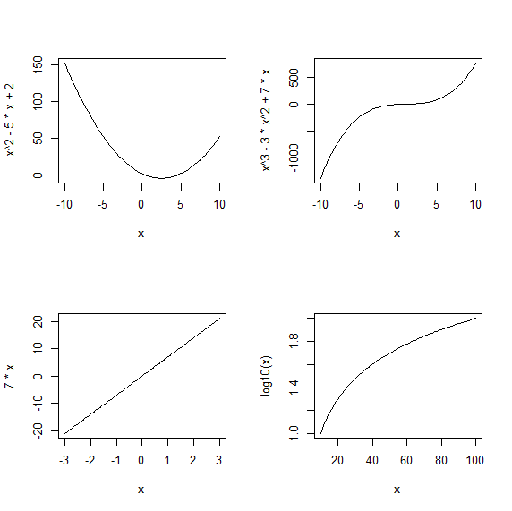

Hello github, i'm comming, hope it's not too late.
2015-04-14 19:20 stone hou, hello, github and world.
2016-08-13 update and add linkedin information
I'm Stone_Hou,侯祥胡 a process engineer in PVD section, 4.7 years working experiencein thim film department of SMIC(beijing).
I Edit this page via HUAWEI T9501 D2,and PUSH this to github via SGit in 2015-04-13.
$ cd your_repo_root/repo_name
$ git fetch origin
$ git checkout gh-pages
#Draw Plot
par(mfrow=c(2,2))
curve(x^2-5*x+2, from=-10, to=10) #画二次函数图像
curve(x^3-3*x^2+7*x, from=-10, to=10) #画三次函数图像
curve(7*x, from=-3, to=3) #画指数函数图像
curve(log10(x), from=10, to=100) #画10为底的对数函数图像
par(mfrow=c(1,1))
#important
mtcars$car <- rownames(mtcars) #列的名称转换为单独的一列
mtcars <- mtcars[, c(12, 1:11)] #把列名换到第一列

If you're using the GitHub for Mac, simply sync your repository and you'll see the new branch.
We've crafted some handsome templates for you to use. Go ahead and continue to layouts to browse through them. You can easily go back to edit your page before publishing. After publishing your page, you can revisit the page generator and switch to another theme. Your Page content will be preserved if it remained markdown format.
If you prefer to not use the automatic generator, push a branch named gh-pages to your repository to create a page manually. In addition to supporting regular HTML content, GitHub Pages support Jekyll, a simple, blog aware static site generator written by our own Tom Preston-Werner. Jekyll makes it easy to create site-wide headers and footers without having to copy them across every page. It also offers intelligent blog support and other advanced templating features.
You can @mention a GitHub username to generate a link to their profile. The resulting <a> element will link to the contributor's GitHub Profile. For example: In 2007, Chris Wanstrath (@defunkt), PJ Hyett (@pjhyett), and Tom Preston-Werner (@mojombo) founded GitHub.
Having trouble with Pages? Check out the documentation at https://help.github.com/pages or contact support@github.com and we’ll help you sort it out.